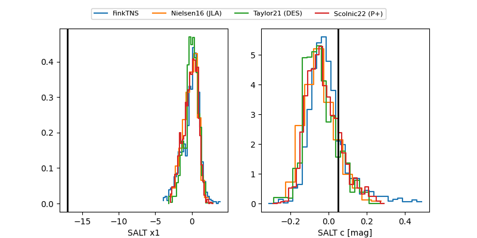

TNS: 2025wsq
YSE: 2025wsq
2025wsq (yse,tns)
PS25hhr (panstarrs)
equatorial (ra, dec) = (342.2433,+13.83577)
galactic (l, b) = (83.1480,-39.39442)

last ps1::g=20.37, ps1::i=20.24, ps1::r=20.62
2 ps1::g, 1 ps1::i, 1 ps1::r detections